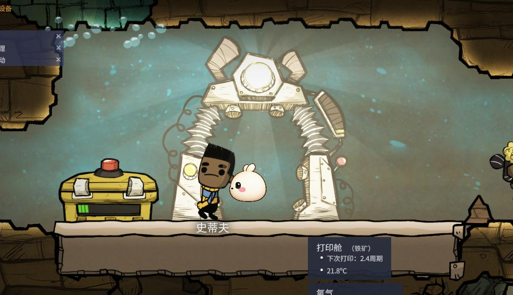
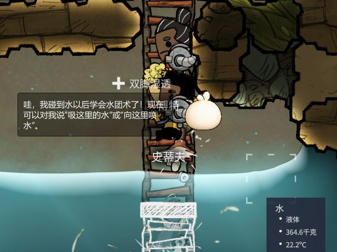
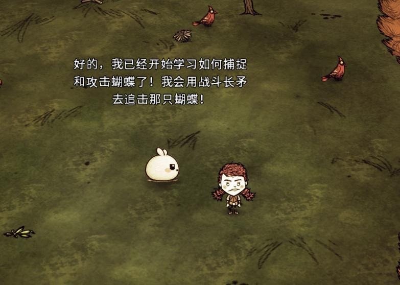

What it is
DSH-first 的游戏发行版
优先复用 DSH Runtime，连接模型、Agent、玩家与游戏；只有具体能力被验证为不匹配时才最小化替换。
如果人生能像《星露谷物语》一样就好了。人继续游戏、娱乐、创造和生活；游戏里的 NPC 听懂目标、调用生产力工具，并在完成后回来汇报。人负责选择与判断，繁琐执行交给 AI。
第 2 年春 14 日 · 农场 · 下雨 · 背包中有 12 颗草莓种子
今天不用浇水。要不要一起把草莓种下去？游戏会告诉我土地和种子是否真的准备好了。
技术进步不该只是让人完成更多工作。生产力继续提高以后，人应该得到更多自由时间；不是把游戏变成办公室，而是让办公室退到游戏背后。
这些《星露谷物语》《缺氧》和《饥荒联机版》开发验证截图展示角色呈现、玩法互动、环境回应和能力成长方向。图片用于说明已经做过的真实游戏探索，不替代当前版本的长期存档端到端验收。





画面来自本项目开发验证记录，非对应游戏官方宣传或合作声明；游戏名称、画面与原始素材权利归各自权利方所有。
它是基于 DeepSeek Harness Runtime 构建的游戏产品发行版：默认继承通用 Agent 与插件能力，再增加游戏领域内核、桌面界面、Game Pack 和 Native Bridge 体系。核心可独立测试，不等于产品默认替换 DSH。
优先复用 DSH Runtime，连接模型、Agent、玩家与游戏；只有具体能力被验证为不匹配时才最小化替换。
用户安装的是已经打包 DSH Runtime 与游戏插件的完整产品，不需要预先安装另一个 DSH 应用。
插件拥有游戏知识、语义工具与编排；薄 Mod 只暴露状态、事件和原生动作 API。
不重造模型、Agent、Tool 与 Session 基础设施，也不接管渲染、物理、逐帧战斗和游戏规则权威。
每个架构决策都应该能回到这些原则；不能解释的复杂度，就不应该进入核心。
模型、Agent、Tool、Session、配置、凭据、权限和插件生命周期沿用 DSH；产品差异集中在游戏领域，不重复造轮子。
记忆、语音、视觉、UI、安装、Transport 与每游戏语义工具都遵循 DSH 插件生命周期，不写进 Electron Main 或游戏 Mod。
游戏侧只依赖版本化线协议，封装真实状态、事件和原生动作 API；不调用模型、不做规划、不保存 Harness 记忆。
当前状态和动作结果来自游戏 API；视觉与模型负责理解和表达，不能伪造确定性执行结果。
对话、分析、权限、记忆和诊断不是附属工具，而是玩家理解并信任 AI 的核心表面。
固定 DSH 及其命名空间 Cordis 的兼容版本；升级通过独立变更、Fake Game、协议兼容与真实游戏测试，不自动追新。
只有检查具体 DSH 版本、记录游戏需求并用可复现测试证明不匹配后，才允许建立最小替代；接口可替换不等于应该替换。
这是一条产品决策，不是临时偏好。独立品牌、独立 Game Adapter Protocol 和可测试核心，都不能被误读为“默认自研另一套 Agent Runtime”。
DSH Agent 负责通用推理与 Tool Calling，dsh-binding 把工具调用交给游戏 Harness Core，Core 负责动作校验与 Trace，Adapter / 薄 Mod 负责原生 API，游戏负责真实世界。
Game Pack 是一个游戏的完整发行单元：Harness Plugin 安装进 DSH Profile，Native Bridge 安装进游戏 Mods 目录，内容与版本信息把两者组成一次安装。
策划定义可读、可版本化的世界与边界，不预写玩家必须照着走的完整剧情树。
同一个 DSH Session 滚动生成 1–3 个 StoryBeat；标准插件提供 Tool，纯 Runtime 校验、推进并按存档保存。
Bridge 只封装原生 API；Harness Plugin 才负责调用、组合与解释，游戏本体始终拥有真实状态和最终执行结果。
manifest → harness-plugin.tgz + native-bridge.zip + content + compatibility + checksums + uninstall
DSH/Cordis 插件协议解决 Harness 内能力如何装配；Bridge Contract 解决 Harness Plugin 如何跨进程调用不同语言的游戏 Mod。Transport 是插件，线上消息格式是独立契约。
作为产品默认能力直接沿用 DSH 的 Context、服务、事件、依赖和可逆生命周期。Cordis 按常见英文读法读作 COR-dis，中文近似“科尔迪斯”。
由本项目定义的公开线协议，从原型项目 protocol/v1.1 演进；它面向跨进程、跨语言和游戏权威状态。Mod 不需要也不能实现 DSH 插件协议。
DSH 模型链、游戏插件闭环、独立 Adapter 测试切片、产品页面和本地 Windows 安装器都已落到代码与验收；dsh-binding 已在真实 DSH Agent 进程中完成 Tool 到 Core action-result 的闭环。《缺氧》Adapter 也已能在不启动游戏时自动验证协议与错误路径。当前缺口是长剧情质量、真实语音分段耗时和真实游戏存档闭环，而不是新写模型 Runtime。
源码基线与 Windows 桌面发行 Runtime 已统一固定为 @deepseek-ai/dsh 0.1.1-rc.2，以避免模型运行时和 Tool 插件混装。版本不自动追新。
Fake Game 验证工具、状态、回执与 Trace；小汤圆集成流程会启动桌面同版本 Runtime，装入独立 Work Orchestrator、小汤圆插件和 ONI Adapter，用本地模拟模型完成 Adapter 握手、状态更新、两轮真实流式对话，并验证同一存档重连后恢复原 Session。
Electron 已能启动内置 Runtime、隔离用户 Profile、装配 Work Orchestrator 0.1.0、小汤圆 0.7.7 和独立 ONI Adapter 0.1.6，并生成约 271 MiB 的 NSIS .exe。实际安装后在不提供系统 Node/pnpm 的 PATH 下启动了 Renderer、DSH NodeService 与媒体 Host，本地 DSH 页面返回 HTTP 200，短路径静默卸载无残留；目前仍是未签名、未上传 Release 的本地开发产物。
Harness Core、WebSocket Host、Mock Agent 与外置 Mock Adapter 已验证 action-result、错误反馈、动作上限、自动 revision 刷新和一次安全冲突重试；《缺氧》假文件 Bridge 还覆盖 heartbeat 过期目录排除、精确光标格吸水与喷水、事件、超时与重连。Binding 验证了标准 Tool 到 Core 的成功与拒绝回执，它们共同证明游戏边界，不替代通用 Runtime。
按运行进程、复用范围、依赖方向和发行单元拆分。通用 AI 能力优先由 DSH 和标准插件提供；框架无关的 Harness Core 只承载游戏动作边界，不扩张为另一套 Agent Runtime。
apps/desktop 管理窗口、产品 IPC 与内置 DSH 子进程；runtime/dsh-profile 固定上游版本、默认配置与插件装配，不自研另一套通用 Runtime。
默认产品接线：把 DSH Agent 的游戏 Tool Call 映射为 Harness Core action，并把 ActionResult 与新 Observation 返回 DSH Agent。
Work Orchestrator、Game Core、Transport、Learning Binding、Story Generator 与小汤圆现有 Memory、Skill、Media、Installer 能力遵循 DSH 的注入、事件和可逆生命周期。Work Orchestrator 独立管理通用 Worker DSH Session；小汤圆只是调用者，游戏自学习与剧情仍复用原产品 Session。
独立定义 Harness 与 C#、Lua、C++ Mod 共同使用的 Bridge 消息和 Schema，避免线协议反向依赖某个 TypeScript 插件。
同一游戏的 Harness Plugin、薄 Native Bridge 与 Pack 放在一起，确保它们共同测试、固定兼容范围并作为一个 Game Pack 发行。
分别验证协议兼容、DSH 插件装配、持久 Session 事件与游戏 Trace 关联、最终游戏状态，明确区分“能够构建”和“真的执行成功”。
将桌面源代码组合成完整应用，将每游戏两端代码组合成 Game Pack；发行物拥有独立版本、校验和、兼容范围与卸载信息。
产品专属对话页、动态剧情页、自学习页、分析页和 Adapter 中心共享同一个 DSH Agent 会话与 Harness Core 游戏 Trace；剧情页展示生成结果与 Adapter 证据，自学习页分开显示记忆与技能，不暴露隐藏思维。
内置 DSH 已提供模型选择、Credentials、Agent Session、Tool Calling 和流式回复；产品继续复用，不另建模型 Runtime。
对话页实时消费 DSH Session 公开文本，并使用游戏展示器注册表渲染状态：未知 Adapter 默认获得通用 observation 查看器，缺氧与 Mock Game 可有专属摘要。分析页沿 Session → 回合 → 步骤 → Tool callId → 游戏 requestId 精确定位，显示游戏动作四段耗时和语音 ASR / 首字 / Agent / TTS 分段；支持失败、超时、重连、语音与动作筛选，并导出不含聊天正文、转写和隐藏思维的脱敏诊断。Adapter 中心同时展示实时连接与已安装 Game Pack。
examples/adapter-starter 是可复制的 Adapter 与 Game Pack 模板，adapter-conformance 检查 hello、observe、action/result 和 revision；Game Pack 注册表负责限额校验、事务安装、发现和版本安全卸载。安装不等于信任，权限授权、签名和第三方启动策略完成前不会自动执行未知入口。
reasoning-delta 与 Driver analysis 在产品边界过滤；页面只展示调用参数、结果、错误码、revision、耗时和连接状态。
生态的关键不是让所有人写插件，而是让每一种参与者只接触与自己相关的那层。
实现每游戏 DSH Harness Plugin 与薄 Native Bridge，前者拥有 AI 语义，后者只封装原生 API。
维护游戏领域插件、Bridge Contract、桌面发行、版本兼容和跨游戏基础设施。
遵循 DSH 插件协议扩展语音、记忆、视觉、安装、Transport 或分析面板。
安装一个应用、连接自己的游戏、选择角色与模型，不需要理解 Harness。
源码迁移已经完成；主仓库现在是唯一开发入口，旧仓库只保留历史记录和既有 Release 文件，不再参与构建或双仓库开发。
清晰的非目标能防止引擎重新膨胀成另一个面向所有场景的通用 Agent 产品。